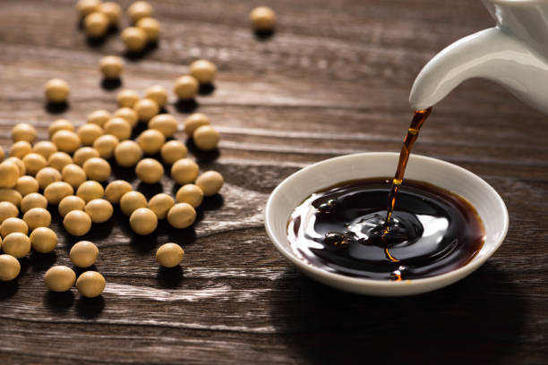
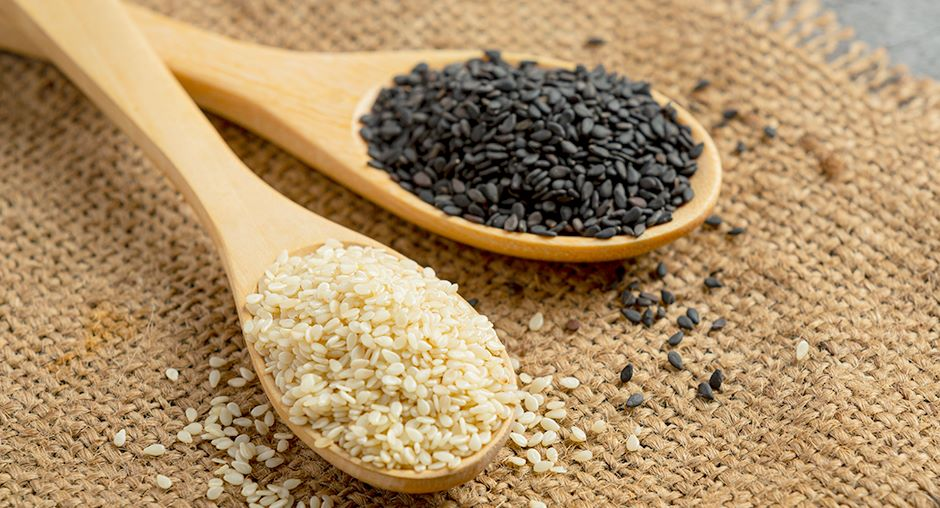
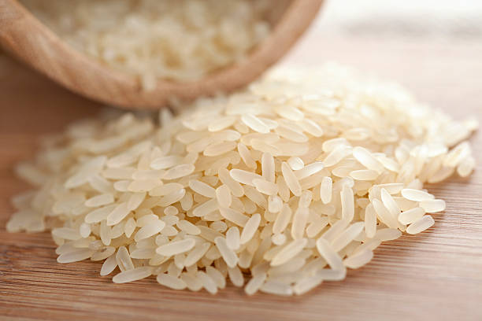
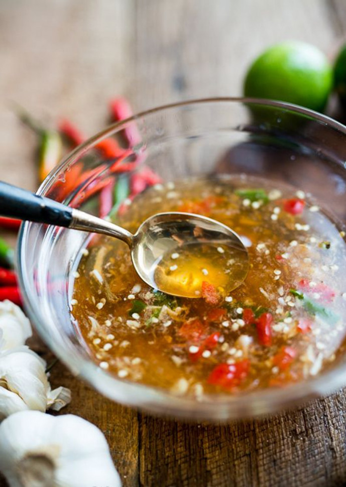

Маленькие секреты большого вкуса

Соевый соус
Дает соленый вкус и характерный темный цвет. Бывает светлый и темный.
Имбирь
Свежий корень добавляет остроту и свежесть. Маринованный имбирь подают к суши.

Кунжутное масло
Ароматное масло для заправки. Добавляют в самом конце, чтобы не перебить вкус.

Рис
Основа питания в Азии. Для суши нужен круглозерный рис.

Рыбный соус
Секретный ингредиент тайской кухни. Дает глубину вкуса.